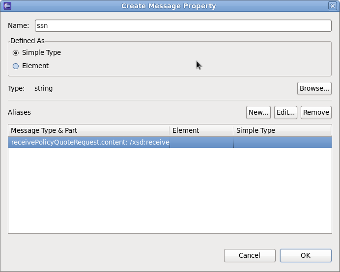
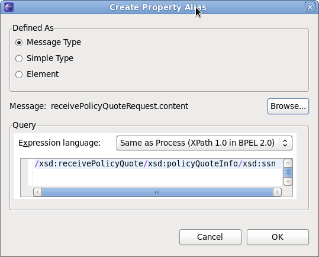

General |
|
| BPEL Editor | The following issues were fixed.
JBIDE-7620 Server view throws an NPE if process no longer exists in app server JBIDE-7526 "Unknown Marker ID" exception being thrown by editor on mousehover over error decorator JBIDE-7520 BPEL Editor crashes on startup if extension model is corrupt JBIDE-7504 NPE when create a eventhandler for a scope JBIDE-7497 Decoration icons for Error Markers do not show up on compound activities JBIDE-7486 BPELModuleContentProvider throws NPE if Servers view contains a deleted or closed module (project) JBIDE-7480 NPE when trying to add an activity to onAlarm branch in pick. JBIDE-7478 BPEL validator marks missing WSDL imports only as warnings. JBIDE-7477 ODE deployment descriptor editor is not closed when deploy.xml file is deleted. JBIDE-7254 [BPEL] Prevented recursive attempt to activate part ProjectExplorer while activating bpeleditor JBIDE-7250 NPE when changing size of a FLOW JBIDE-7165 BPEL Editor does not create WSDL as part of process creation wizard JBIDE-7116 BPEL Editor not seeing message structure when imported into WSDL JBIDE-7107 Problems when creating BPEL Correlation Set JBIDE-7028 New ODE deployment descriptor wizard should create deploy.xml file instead of bpel-deploy.xml JBIDE-6748 Enhance Assign Activity Initializer to support complex message types that include choice elements JBIDE-6661 Deploying BPEL process with dependent jars JBIDE-6170 BPEL source folder should not be hard-coded as "bpelContent" JBIDE-6016 Error markers are not removed after correcting BPEL |
UI Changes |
|
| Correlation Set Dialogs | The Correlation Set creation dialogs have been simplified. See JBIDE-7107 for details.   |